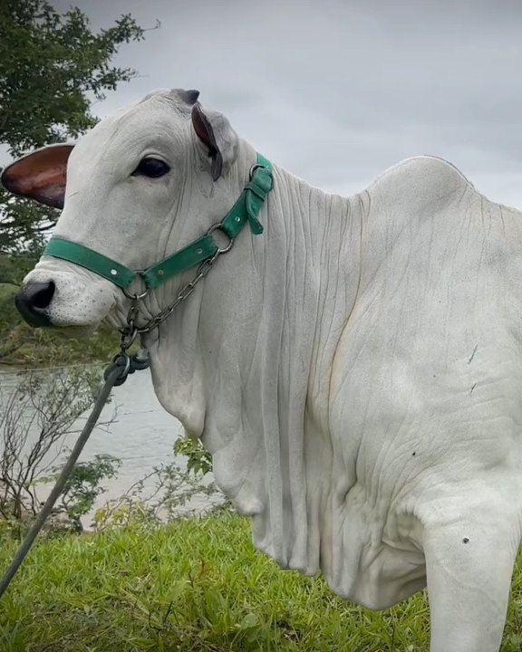
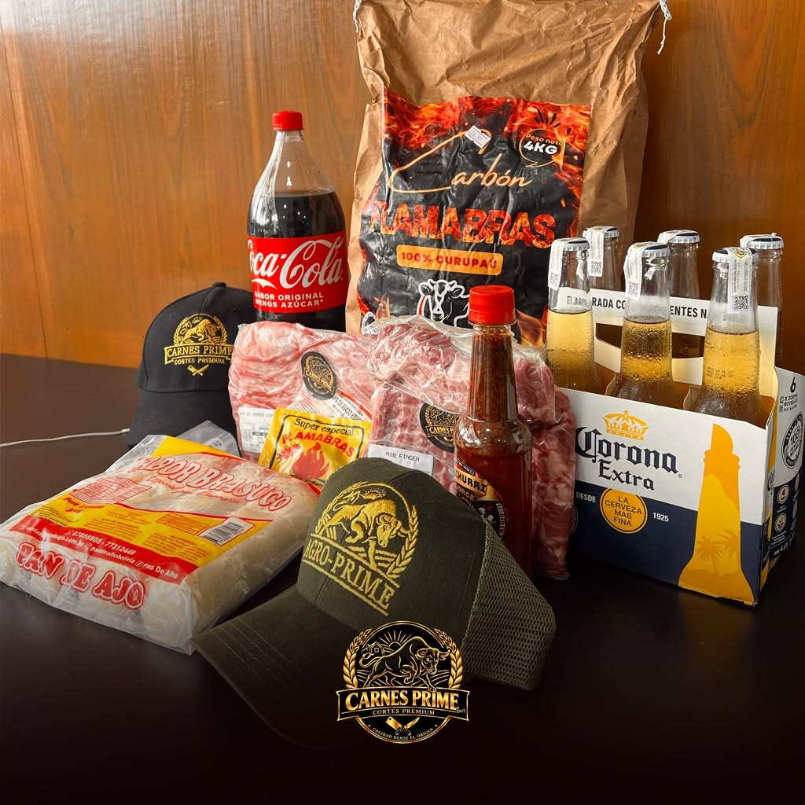
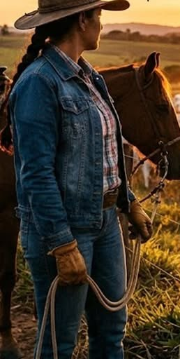
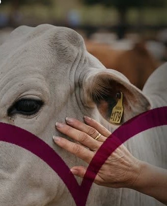
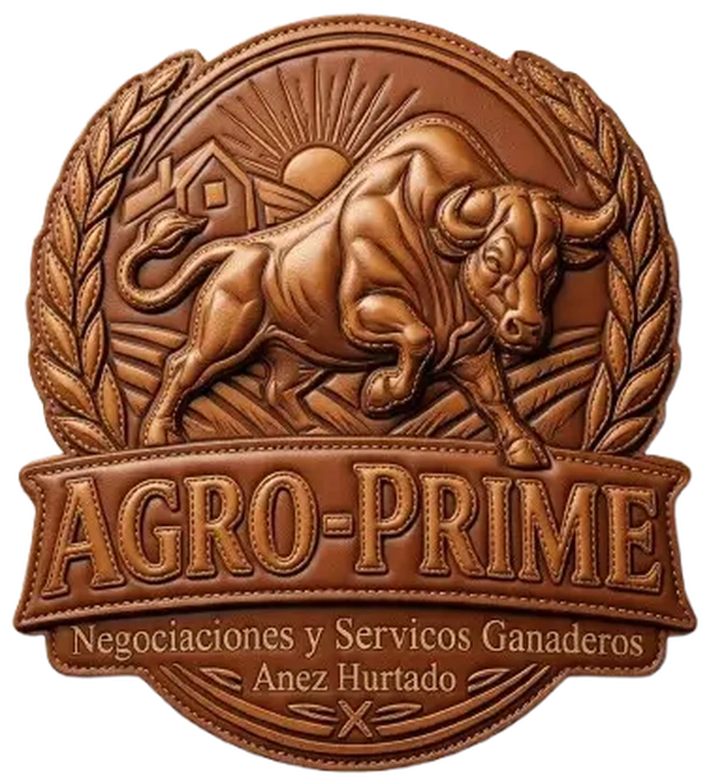
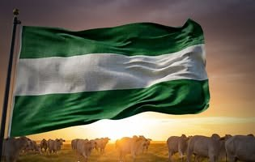

Santa Cruz de la Sierra · Bolivia
Excelencia en ganadería.
Trabajamos hoy, producimos el futuro.
Gestión de inversiones ganaderas y producción pecuaria de alto rendimiento. Genética, nutrición y sanidad bajo una misma lógica: rentabilidad sustentable.
01 — El modelo
Invertir en ganadería, con criterio.
Agro-Prime articula capital, genética y operación para que la inversión ganadera tenga reglas claras, acompañamiento técnico y resultados que se puedan leer.
Somos una empresa de gestión de inversiones y servicios ganaderos con base en Santa Cruz de la Sierra. Trabajamos junto a propietarios, socios e inversionistas que buscan activos productivos bien administrados.
No se trata solo de comprar animales: se trata de construir un sistema que sostenga la productividad en el tiempo. Genética, nutrición, sanidad y gestión operan como una sola unidad de negocio.
- 01 Gestión de inversiones Estructura, acompañamiento y lectura de resultados para capital que busca activos productivos.
- 02 Producción de alto rendimiento Genética y manejo orientados a más kilos, mejor conversión y un rodeo más eficiente.
- 03 Servicios e infraestructura Nutrición, sanidad y bioseguridad para predios que necesitan operar con estándares.

“Inversión en calidad, genética y tecnología para maximizar la rentabilidad y el rendimiento pecuario.”
Propuesta de valor · Agro-Prime
02 — Los cuatro pilares
Un sistema, no una suma de servicios.
La genética define el potencial. La nutrición y la sanidad lo sostienen. La gestión lo convierte en retorno.
Fotogramas de archivo de Agro-Prime y dirección de arte generada. Las imágenes generadas no documentan instalaciones ni animales específicos.
Archivo Agro-Prime · Santa Cruz de la Sierra
Genética en movimiento03 — Genética
El futuro del rodeo se decide hoy.
La genética es el punto de partida de cualquier resultado. Seleccionamos y mejoramos líneas para que el rodeo exprese su potencial en kilos, fertilidad y eficiencia.
- Selección y mejora genética orientadas al rendimiento del ganado.
- Evaluación de reproductores y vientres para decisiones de largo plazo.
- Tecnología y manejo aplicados a la producción pecuaria.
04 — Cómo trabajamos
Acompañamiento de principio a fin.
Un método claro, adaptado al tamaño y al momento de cada inversión. Sin fórmulas rígidas: el predio y el objetivo mandan.
-
01
Diagnóstico
Conocemos el predio, el rodeo y los objetivos de quien invierte.
-
02
Plan
Definimos prioridades de genética, nutrición y sanidad, con presupuesto y tiempos.
-
03
Ejecución
Acompañamos la operación y ajustamos lo que el campo exige.
-
04
Medición
Revisamos resultados y proyectamos el siguiente ciclo.
Primera conversación
¿Tenés un predio o capital para invertir?
Coordinemos una charla para entender el objetivo. Sin compromiso.
La primera reunión es para entender el objetivo. El plan se arma después.
05 — El grupo
Del predio a la mesa.
Carnes Prime Market es la marca hermana del grupo. Cortes premium, productos para el asado y atención de barrio, con un beneficio pensado para los socios de Agro-Prime.
10% de descuento para socios de Agro-Prime.*
- Calle Libertad, Punta del Este local 2
Santa Cruz de la Sierra, Bolivia - +591 57389430
*Beneficio sujeto a condiciones vigentes en tienda.




Trabajamos hoy,
producimos el futuro.
06 — Nosotros
Crecer también es devolver.
Creemos en una ganadería que genera valor más allá del predio. Acompañamos iniciativas de nuestra gente y de las comunidades donde trabajamos.
El compromiso con una causa noble también forma parte de cómo entendemos el negocio: resultados que se sostienen cuando el entorno también crece.
-
01
Productividad
Cada decisión técnica busca más kilos y mejor conversión.
-
02
Innovación
Genética, tecnología y manejo aplicados al día a día del predio.
-
03
Confianza
Reglas claras, información y acompañamiento permanente.
Reclutamiento
Trabaja con nosotros
Buscamos personas para contenido en vivo y marketing digital. Si te interesa el rubro, escribinos.
07 — Contacto
Hablemos de tu próxima inversión.
Contanos qué tenés en mente. Te respondemos por WhatsApp o correo, sin vueltas.
La Paz
+591 63095511Contratos
+591 62600801Reclutamiento
rrhh@agroprime.com.bo